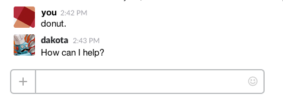

Dakota Ling
I work at Primal Screen
dakota@primalscreen.com
...are awesome developers in the making.
What do you find interesting about interactive?
ringmaster.creativecircus.edu/class/102
All aboard the sylla bus
Google DocClass Repo: github.com/CyanLetter/WebDev3_Spring2017
The internet is your book.
Today's link is sidebar.io
@dakota
Chat the word 'donut' for help
We will be writing code every day. To help get things going faster, let's work from a demo template.
github.com/CreativeCircus/circus-starterGithub Desktop: desktop.github.com
Static, Relative, Absolute, Fixed
a.k.a the default
Gives access to new properties
.some-div {
position: relative;
top: 0;
right: 10%;
}
Percentages are relative to the parent
DO NOT use top, right, bottom, and left with relative positioning.
DO use margin, padding, floats, flexbox, etc.
One of your best friends.
Removes element from document flow.
Must use top, right, bottom, and left to position.
Positioned relative to the last non-static parent.
Position children within a parent container
Crop content with overflow: hidden;
Layer content with order or z-index
Also removes element from document flow
Positioned relative to viewport
Useful for dialogue windows, navigation, and other persistent elements
Translate, Scale, Rotate, Skew
Excellent. If you encounter someone for whom 2D transforms do not work, laugh at them.
Another way to move things about
Relative to element's dimensions
Fun for slide reveals
.translate-one {
transform: translateX(10px);
}
.translate-both {
transform: translate(20px, 20px);
}
Translate is also good for centering elements with absolute positioning
.centered {
position: absolute;
left: 50%; /* relative to parent width */
transform: translateX(-50%); /* relative to element width */
}
Can apply multiple transforms at once
Still applied as one property
Order matters!
.multi {
transform: scale(1.5) translateX(100%);
}
Exactly what it sounds like
Decent for image effects, but watch for pixellation
.scale-proportionally {
transform: scale(1.2);
}
.scale-asymetrically {
transform: scale(1, 1.2);
}
Measured in degrees
Fun for subtle effects on abstract shapes
.rotate {
transform: rotate(90deg);
}
Also measured in degrees.
Takes two parameters.
.skew {
transform: skew(10deg);
}
.skew-both {
transform: skew(10deg, 10deg);
}
Can also be used for sweet scroll effects and crazy menus.
Individual properties are coming to Chrome maybe.
Also, next class we are learning Sass. Get hyped!